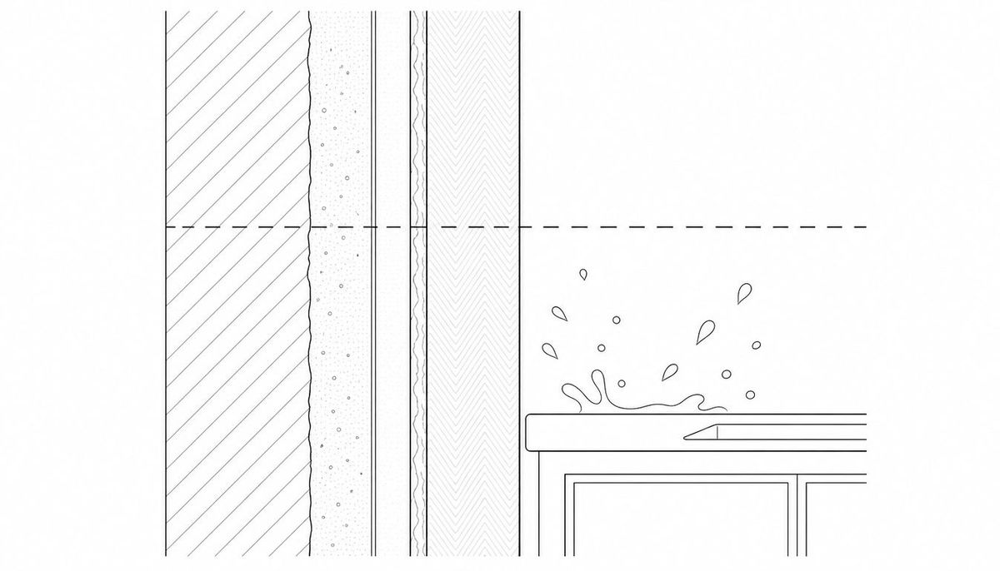

моющиеся обои для кухни — это виниловые на флизелиновой основе с классом влагостойкости и защитным слоем. Рулон 1,06×10,05 м стоит 1 500–6 000 руб., на кухню 9 м² уходит 6–8 рулонов. Мыть можно влажной губкой без абразива 2–4 раза в год, срок службы 8–10 лет. За фартуком у плиты обои не держат: там нужна плитка, стекло или краска на 600 мм от варочной панели.
Из чего состоит моющаяся обоина

| Слой | Материал | Что даёт |
|---|---|---|
| Основа | флизелин | прочность, клей наносится на стену |
| Верхний слой | вспененный винил | рельеф и защита от влаги |
| Защитный лак | акриловый | возможность мыть |
| Клей | флизелиновый | схватывание 24–48 часов |
| Грунт | акриловый укрепляющий | снижает расход клея на 20 % |
Бумажная основа с виниловым слоем дешевле на 20–30 %, но боится влаги у швов и хуже снимается. Для кухни берут именно флизелин: он не размокает и снимается целым полотном.
Классы стойкости к мойке
| Маркировка | Что выдерживает | Цена за рулон |
|---|---|---|
| Водостойкие | случайные брызги, сухая уборка | 1 200–2 500 руб. |
| Моющиеся | влажная губка, без трения | 1 500–3 500 руб. |
| Моющиеся повышенной стойкости | мягкая щётка, слабый раствор | 2 500–4 500 руб. |
| Моющиеся с защитой от выгорания | солнце и мойка | 3 500–6 000 руб. |
Маркировку смотрят на этикетке: одна волна — водостойкие, две — моющиеся, три — повышенной стойкости. Для кухни минимум две волны; у окна с южной стороны — с защитой от выгорания.
Расчёт количества
| Кухня | Площадь стен | Рулонов 1,06×10,05 | Цена |
|---|---|---|---|
| 6 м² | 18 м² | 4–5 | 6 000–30 000 руб. |
| 9 м² | 26 м² | 6–7 | 9 000–42 000 руб. |
| 12 м² | 32 м² | 7–9 | 10 500–54 000 руб. |
| Кухня-гостиная 20 м² | 45 м² | 10–12 | 15 000–72 000 руб. |
К площади добавляют 10–15 % на подгонку раппорта: рисунок с раппортом 64 см даёт отход до 1,5 м с рулона. Обои без раппорта (однотонные, мелкий хаос) — самый экономичный вариант для кухни.
Фартук: где обои не работают
| Зона | Материал | Цена за м² |
|---|---|---|
| 600 мм от плиты | плитка или стекло | 1 500–6 000 руб. |
| За мойкой | плитка, стекло, компакт-ламинат | 1 200–5 000 руб. |
| Выше фартука | моющиеся обои | 300–600 руб. |
| У окна и радиатора | обои с защитой от выгорания | 400–700 руб. |
Жир и пар у плиты не смываются с обоев полностью: через 2–3 года полотно темнеет и отходит по шву. Фартук из плитки или стекла на 600 мм от варочной панели — не перестраховка, а норма.
Смета 2026
| Позиция | Кухня 9 м² | Стоимость |
|---|---|---|
| Обои моющиеся | 7 рулонов | 10 500–24 500 руб. |
| Клей флизелиновый | 2 упаковки | 1 200–2 500 руб. |
| Грунт | 10 л | 1 500–3 000 руб. |
| Шпаклёвка и шлифовка | 20 кг | 1 500–4 000 руб. |
| Работа оклейки | 26 м² | 10 000–22 000 руб. |
Итого 24 700–56 000 руб. под ключ. Самостоятельная оклейка экономит 10 000–22 000 руб., но требует 2–3 дня с сушкой.
Как мыть, чтобы не стереть рисунок
- Снять пыль сухой мягкой щёткой или пылесосом с мягкой насадкой.
- Приготовить раствор: 1 чайная ложка жидкого мыла на 5 л тёплой воды.
- Смочить губку, отжать почти досуха — вода не должна течь по стене.
- Протереть участок сверху вниз, не тереть одно место дважды.
- Промыть чистой водой и промокнуть микрофиброй.
- Жирные пятна у плиты удалять средством для обезжиривания поверхностей, а не щёткой.
Мыть всю кухню достаточно 2–4 раза в год, локально у плиты и мойки — раз в 1–2 месяца. Абразивные порошки, меламиновые губки и жёсткие щётки снимают защитный лак, и после этого обои перестают быть моющимися.
Стыки, углы и вентиляция
| Узел | Решение | Цена |
|---|---|---|
| Стык полотен | встык, прокатать валиком | 0 руб. |
| Внутренний угол | полотно заходит на 15–20 мм | 0 руб. |
| Внешний угол | пластиковый или алюминиевый профиль | 300–900 руб./п.м |
| Стык с фартуком | санитарный силикон | 400–900 руб. |
| Вокруг вытяжки | термостойкий герметик | 500–1 200 руб. |
Стык обоев с фартуком и вытяжкой герметизируют: именно через эти швы жир и пар попадают под полотно, и обои отходят сверху вниз. Силикон обновляют раз в 2–3 года.
Снятие старых обоев перед поклейкой
Моющиеся обои почти не пропускают воду, поэтому снимать их сложнее обычных: клей под ними не размокает. Работают так: прокалывают полотно игольчатым валиком, смачивают тёплой водой с добавлением кондиционера для белья, ждут 15–20 минут и снимают шпателем от шва.
| Тип старых обоев | Как снимать | Время |
|---|---|---|
| Бумажные | смочить, снять шпателем | 2–4 часа на кухню |
| Виниловые моющиеся | игольчатый валик + вода + кондиционер | 4–8 часов |
| Флизелиновые | снять сухими целым полотном | 1–2 часа |
| На покраске | снять слой краски или шлифовать | 6–12 часов |
Если старые обои держатся крепко и лежат ровно, их можно не снимать: прогрунтовать и клеить поверх. Но только если нет пузырей и отслоений — иначе новые обои повторят все дефекты.
Порядок работ
- Снять старые обои, простучать штукатурку, заделать трещины.
- Отшлифовать, обеспылить, прогрунтовать в 1–2 слоя.
- Разметить вертикаль по отвесу от угла.
- Нанести клей на стену (флизелин — клей на стену, не на полотно).
- Наклеить первое полотно, разгладить валиком от центра к краям.
- Следующие полотна — встык, без нахлёста, стык прокатать валиком.
- Обрезать излишки по плинтусу и потолку, установить фартук.
Ошибки и их цена
| Ошибка | Последствие | Исправление |
|---|---|---|
| Обои вместо фартука у плиты | жир, потемнение за 2 года | замена на плитку 8 000–25 000 руб. |
| Клей на полотно вместо стены | размокание флизелина | переклейка полотна |
| Нет грунта | стыки расходятся | переклейка |
| Абразивная мойка | стёртый рисунок | замена полотна |
Чек-лист перед покупкой
- Маркировка — минимум две волны (моющиеся).
- Основа — флизелин, не бумага.
- Раппорт учтён, запас 10–15 %.
- Фартук 600 мм от плиты — не обои.
- Клей и грунт под флизелин.
Частые вопросы
Можно ли клеить моющиеся обои на кухне за плитой?
Нет. На 600 мм от варочной панели и за мойкой нужна плитка, стекло или компакт-ламинат: жир и пар не смываются с обоев.
Сколько рулонов нужно на кухню 9 м²?
6–7 рулонов 1,06×10,05 м при площади стен 26 м². С раппортом 64 см — 7–8 рулонов.
Чем мыть моющиеся обои?
Влажной губкой с мягким мыльным раствором, без абразива и щётки. После мытья промокнуть сухой тканью.
Сколько служат моющиеся обои на кухне?
8–10 лет при правильной эксплуатации. У плиты без фартука — 2–3 года.
Что лучше — виниловые на флизелине или бумажные?
Виниловые на флизелине: не размокают, снимаются целым полотном. Бумажные дешевле, но швы расходятся от влаги.
Можно ли клеить моющиеся обои в ванной?
Только в сухой зоне и с герметизацией швов. В душевой зоне обои не применяют — там плитка.